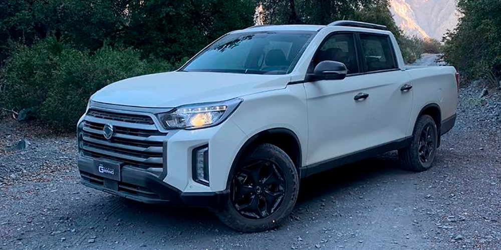
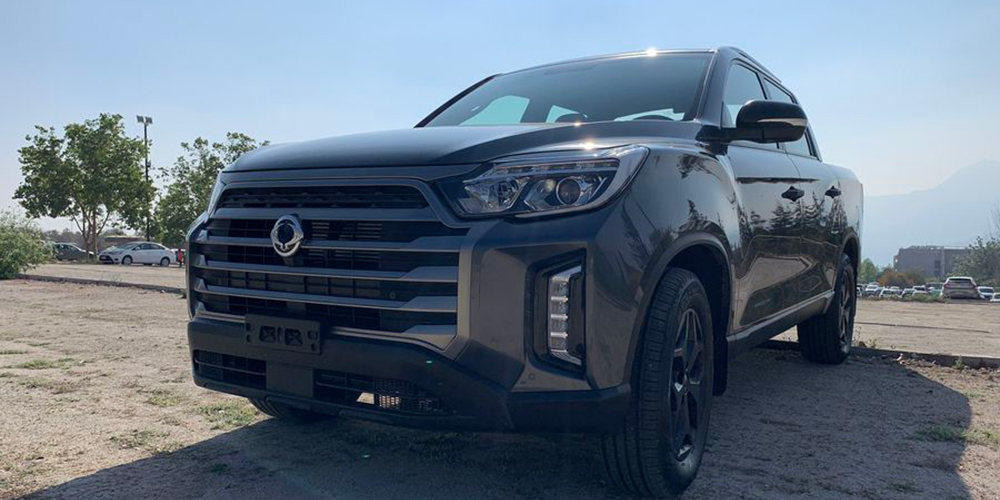
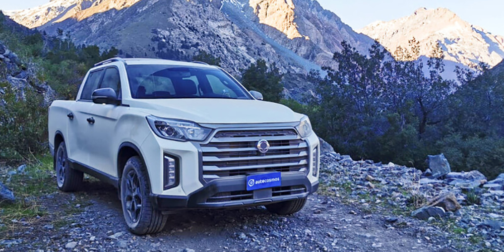
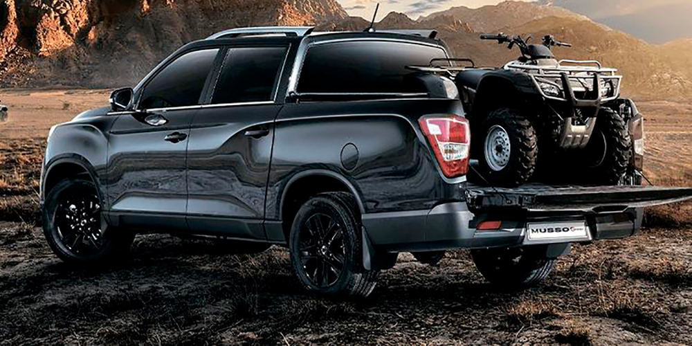

New Musso
Reviews de Prensa

Renovadas Musso y Musso Grand de SsangYong buscan ampliar presencia en el segmento pick up
La nueva Musso contará con 3 versiones y la Musso Grand, más orientada al trabajo, con 6 versiones que cuentan con...
Ver publicación

SsangYong Musso: la pick-up surcoreana sigue marcando su propio camino
Nos subimos durante una semana al facelift de la conocida camioneta Musso, que ahora estrena una impronta mucho más audaz...
Ver publicación

SsangYong Musso y Grand Musso 2022: renovación para mantener el tranco
La marca coreana actualiza en Chile las dos versiones de su pick-up mediana, añadiendo nuevas versiones full equipadas para ampliar...
Ver publicación

SsangYong Musso y Musso Grand escalan en el ranking de camionetas más vendidas de Chile
La Grand Musso se presenta en 4 versiones, todas con motor 2.2 turbo diésel, que entrega 178 hp y un torque máximo de 400 Nm...
Ver publicación